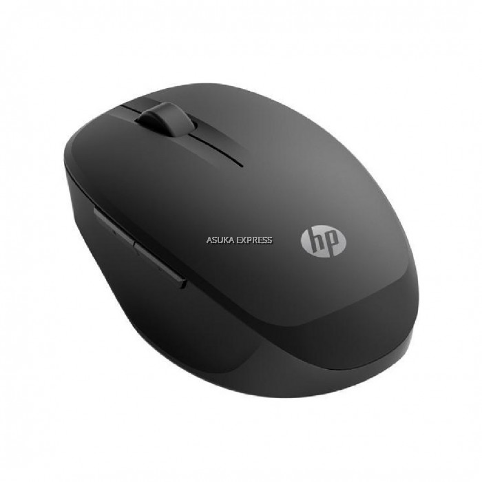
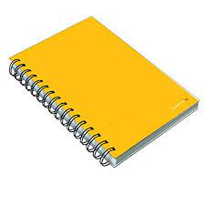
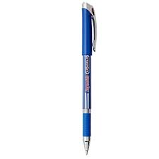
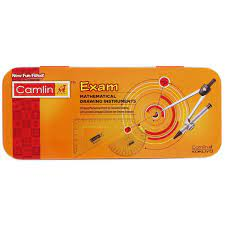

CASE STUDY

- mouse 
- notebook 
- pen 
- geometry box 
Output on google lens - computer mouse
Output on Mobilenet Model - desk
Result -
google lens model is more accurate--
Output on google lens - notebook
Output on Mobilenet Model - monitor
Result -
google leans is more accurate--
Output on google lens - pen
Output on Mobilenet Model - spatula
Result -
google lens is more accurate--
Output on google lens - geometry box
Output on Mobilenet Model - gillotine
Result -
google lens is more accurate--
google lens give more correct answer